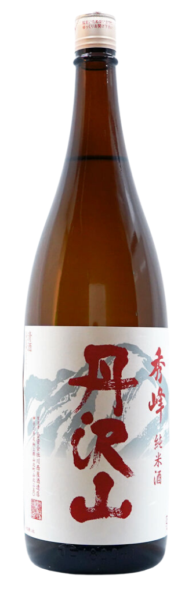

SAKEYŌ
Community
Pass it around.
Your sake, your spots, your notes — shared with the people.
This week · Singapore
Shared

Tedorigawa Yamahai Junmai
Yoshida Shuzo · Ishikawa
92% match · Heavy · Aged
Tried this warmed at Orihara last night. The yamahai funk lands different at 45°C — almost like a dry sherry. Not for a first date but exactly right for a cold evening.
9 replies
Save

At Kurara tonight — which of these is best served warm?
Cold evening, looking for something to sip slow. My profile leans Heavy / Aged / Mellow.
14 replies
Open
Kanazawa
Three nights in Kanazawa next month. Where do I sit if I only go to one sake bar?
Pinned answer · Brad B., guide
Shu Shu, on a side street off Korinbo. Yamagami-san used to brew at Kikuhime — order the flight, ask about aged. No tables, just the counter. Message ahead on Facebook.
22 replies
Save

Tanzawayama Tokubetsu Junmai
Kawakita Shuzo · Kanagawa
78% match · Fresh · Clean
Had this at Kurara on Saturday — clean, faintly grassy, low alcohol feel even at 15%. The kind of bottle I'd put on a table with sashimi and not have to explain. Worth seeking out.
4 replies
Save
More from the community.
代
One rung at a time.